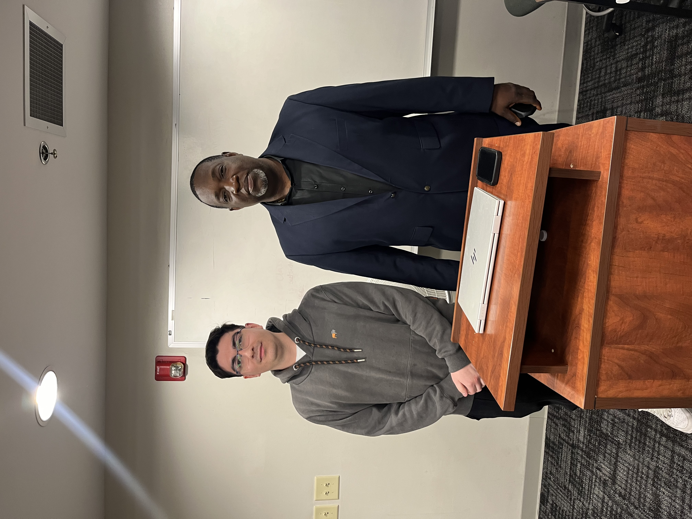

About me
Professional profile: Autodidact Chilean Computer Science Engineer currently pursuing a Master's in IT Management in the U.S., with technical experience in software development, cybersecurity, and data management. With skills in Python, SQL, and Web development tools, I am a highly adaptable and collaborative professional who values strong team dynamics.
Mission
Contribute to the development of secure, efficient, and scalable technological solutions through continuous learning, ethical engineering practices, and international collaboration. My mission is to make a change through innovation and reliable data systems.
Vision
To become an excellent developer recognized for building impactful systems, promoting data security, and connecting different cultures through innovation and development.
Values
Integrity and Responsibility - I value ethical behavior and professionalism in every project.
Continuous learning and Autodidacticism - Always growing through formal education, self study, and curiosity
Collaboration - Teamwork and communication are key to impactful innovation.
Adaptability - I thrive in changing environments and diverse cultural settings.
Excellence - I strive for high standards in both technical quality and personal growth.
Goals
- Contribute to real-world data systems that support decision-making in different industries.
- Obtain relevant certifications.
- Work with globally diverse teams to strengthen cross-cultural collaboration.
- Eventually lead large-scale systems with a strong focus on security and impact.
Projects
My Capability
My Capability is a system that uses a Machine Learning-based model to measure physical performance during exercises such as vertical jump, horizontal jump, and sprint. The used technologies in this system were Pose Detection ML Kit by Google, Java, Android Studio, React, and GPS. Our objective with this project was to improve physical capabilities of both athletes and people who view exercise as a hobby, with simple, modern, and professional tools. After working during one year in this project our team of six members could deploy an exceptional mobile application.
Portfolio Website
This project consists on building an interactive website that showcase my resume and projects. The purpose of this project is to improve my resume and stand out among the competition and get a job faster than sending just my CV. The technologies in this project are only HTML, CSS, and JavaScript for interaction. After two months of development, I could deploy an interactive website that effectively showcase my profile and projects.
My Resume Website
My Resume Website consists on building an interactive website that describe my background, skills and proficiencies. Used technologies are HTML, CSS, and JavaScript for interaction. After one month of development, I could deploy an interactive website that effectively describes my resume.
Strong Skills
Hard Skills
- Python, SQL, JavaScript, HTML/CSS, C, C++, Java, Go
- PostgreSQL, MSSQL Server, Microsoft Office, Git
- Frameworks: React, Scikit-learn, Pandas/Numpy
Soft Skills
- Teamwork
- Autodidacticism
- Effective Communication
- Problem Solving
- Leadership
- Adaptability